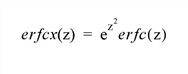

The ERFCX function returns the value of the scaled complementary error function:

For real input, ERFCX is computed using rational functions, as described in “Rational Chebyshev approximations for the error function,” W. J. Cody, Math. Comp., 1969, pp. 631-638. For complex input, ERFCX is computed as EXP( Z 2 )ERFC( Z ).
Result = ERFCX( Z )
The result is double-precision if the argument is double-precision, otherwise the result is floating-point. The result always has the same structure as Z . The ERFCX function also accepts complex arguments.
The expression for which the scaled complementary error function is to be evaluated. Z may be complex.
This routine is written to make use of IDL’s thread pool , which can increase execution speed on systems with multiple CPUs. The values stored in the !CPU system variable control whether IDL uses the thread pool for a given computation. In addition, you can use the thread pool keywords TPOOL_MAX_ELTS, TPOOL_MIN_ELTS, and TPOOL_NOTHREAD to override the defaults established by !CPU for a single invocation of this routine. See Thread Pool Keywords
To find the scaled complementary error function of 0.4 and print the result, enter:
PRINT, ERFCX(0.4D)
IDL prints:
0.67078779
|
5.5 |
Introduced |
|
5.6 |
Z argument accepts complex input |